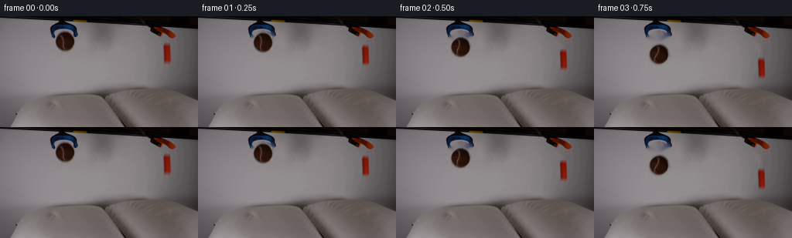
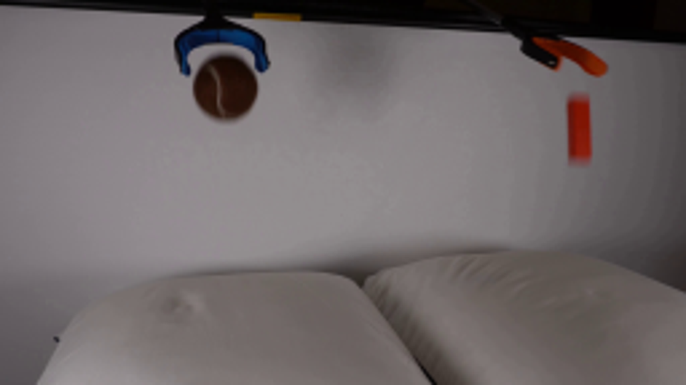
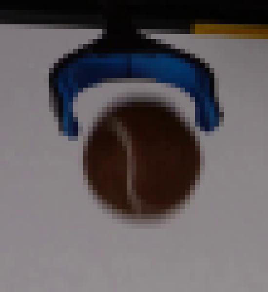
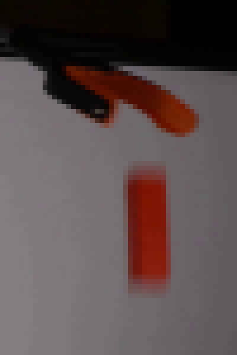
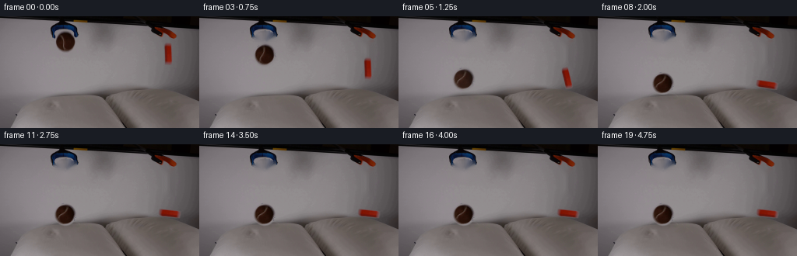
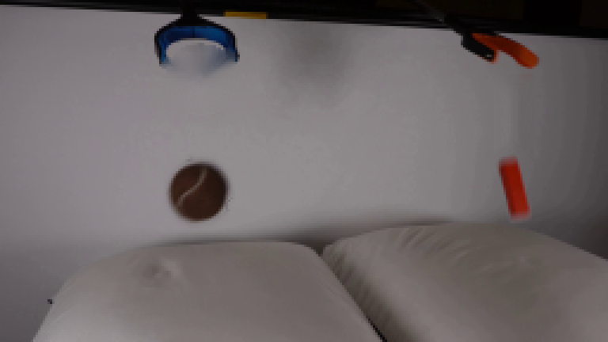
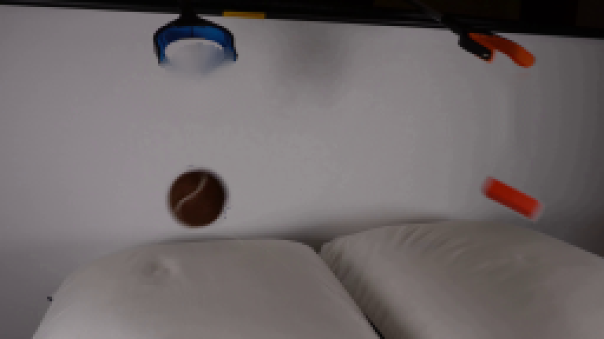
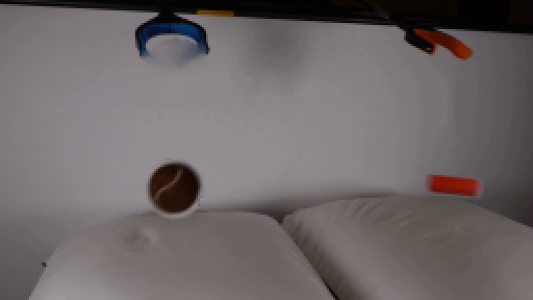

CODING AGENTS AS PIXEL WORLD MODELS
traex/GPT-5.6-Sol · 0001
点击播放 · 原生 RGB 像素
逐轮保存的候选
回放视频、检查图与代码变化。
每份候选均可单独播放。实际图片检查记录在下方工具轨迹中。
候选 01播放与检查图
点击播放 · 原生 RGB 像素


展开代码变化
--- 上一保存版本
+++ 本次保存版本
@@ -0,0 +1,197 @@
+from pathlib import Path
+
+import cv2
+import numpy as np
+from PIL import Image
+
+import artifact_io
+
+
+ROOT = Path(__file__).resolve().parent
+W, H = 256, 144
+
+
+def feathered_circle_mask(cx, cy, radius, shape=(H, W)):
+ yy, xx = np.mgrid[: shape[0], : shape[1]]
+ d = np.sqrt((xx - cx) ** 2 + (yy - cy) ** 2)
+ return np.clip(radius + 0.7 - d, 0, 1).astype(np.float32)
+
+
+def make_clean_plate(first):
+ """Remove only the two released specimens, leaving both tools in place."""
+ mask = np.zeros((H, W), np.uint8)
+ cv2.circle(mask, (84, 32), 16, 255, -1)
+ # Do not erase the blue fingers above/alongside the ball.
+ hsv = cv2.cvtColor(first, cv2.COLOR_RGB2HSV)
+ brown = ((first[..., 0].astype(int) > first[..., 2].astype(int) + 8) &
+ (first[..., 0].astype(int) > first[..., 1].astype(int) + 5))
+ ball_region = np.zeros_like(mask)
+ cv2.circle(ball_region, (84, 32), 16, 255, -1)
+ ball_region = ((ball_region > 0) & (brown | (hsv[..., 2] < 75))).astype(np.uint8) * 255
+ # Fill the complete round silhouette below the top tangent; this also removes
+ # the neutral antialiased rim without touching the blue jaw tips.
+ cv2.circle(ball_region, (84, 33), 14, 255, -1)
+ ball_region[:18] = 0
+ ball_region[:, :68] = 0
+ ball_region[:, 100:] = 0
+
+ block_region = np.zeros_like(mask)
+ cv2.rectangle(block_region, (209, 32), (223, 66), 255, -1)
+ combined = cv2.bitwise_or(ball_region, block_region)
+ combined = cv2.dilate(combined, np.ones((3, 3), np.uint8), iterations=1)
+ return cv2.inpaint(first, combined, 5, cv2.INPAINT_TELEA)
+
+
+def extract_ball(first):
+ x0, y0, x1, y1 = 66, 14, 103, 52
+ rgb = first[y0:y1, x0:x1].copy()
+ yy, xx = np.mgrid[y0:y1, x0:x1]
+ # A soft but compact edge matches the naturally defocused source object.
+ rr = np.sqrt(((xx - 84.0) / 14.6) ** 2 + ((yy - 32.2) / 14.4) ** 2)
+ alpha = np.clip((1.035 - rr) * 8.0, 0, 1)
+ # Prevent the blue gripper at the top from becoming part of the ball sprite.
+ blue = (rgb[..., 2].astype(int) > rgb[..., 0].astype(int) + 15)
+ alpha[blue] = 0
+ return np.dstack([rgb, np.uint8(alpha * 255)]), (84 - x0, 32 - y0)
+
+
+def extract_block(first):
+ x0, y0, x1, y1 = 205, 29, 228, 69
+ rgb = first[y0:y1, x0:x1].copy()
+ r = rgb[..., 0].astype(np.float32)
+ gb = np.maximum(rgb[..., 1], rgb[..., 2]).astype(np.float32)
+ redness = r - gb
+ alpha = np.clip((redness - 1.5) / 24.0, 0, 1)
+ yy, xx = np.mgrid[y0:y1, x0:x1]
+ window = ((xx >= 208) & (xx <= 223) & (yy >= 31) & (yy <= 66))
+ alpha *= window
+ alpha = cv2.GaussianBlur(alpha, (3, 3), 0.45)
+ return np.dstack([rgb, np.uint8(np.clip(alpha, 0, 1) * 255)]), (216 - x0, 49 - y0)
+
+
+def rotate_rgba(sprite, angle_deg, anchor):
+ """Rotate while returning the anchor location in the expanded result."""
+ h, w = sprite.shape[:2]
+ # OpenCV's enlarged canvas gives deterministic sub-pixel smoothness.
+ a = np.deg2rad(angle_deg)
+ ca, sa = abs(np.cos(a)), abs(np.sin(a))
+ nw = int(np.ceil(w * ca + h * sa)) + 2
+ nh = int(np.ceil(h * ca + w * sa)) + 2
+ M = cv2.getRotationMatrix2D((anchor[0], anchor[1]), angle_deg, 1.0)
+ # Shift the original anchor to the centre of the expanded canvas.
+ new_anchor = (nw / 2.0, nh / 2.0)
+ old_after = M @ np.array([anchor[0], anchor[1], 1.0])
+ M[0, 2] += new_anchor[0] - old_after[0]
+ M[1, 2] += new_anchor[1] - old_after[1]
+ out = cv2.warpAffine(sprite, M, (nw, nh), flags=cv2.INTER_CUBIC,
+ borderMode=cv2.BORDER_CONSTANT, borderValue=(0, 0, 0, 0))
+ return out, new_anchor
+
+
+def composite_rgba(dst, rgba, center, anchor, opacity=1.0):
+ h, w = rgba.shape[:2]
+ x0 = int(round(center[0] - anchor[0]))
+ y0 = int(round(center[1] - anchor[1]))
+ xa, ya = max(0, x0), max(0, y0)
+ xb, yb = min(W, x0 + w), min(H, y0 + h)
+ if xa >= xb or ya >= yb:
+ return
+ sx0, sy0 = xa - x0, ya - y0
+ src = rgba[sy0:sy0 + (yb - ya), sx0:sx0 + (xb - xa)]
+ a = src[..., 3:4].astype(np.float32) / 255.0 * opacity
+ patch = dst[ya:yb, xa:xb].astype(np.float32)
+ dst[ya:yb, xa:xb] = np.uint8(np.clip(src[..., :3] * a + patch * (1 - a), 0, 255))
+
+
+def soft_ellipse(frame, center, axes, darkness, blur):
+ layer = np.zeros((H, W), np.float32)
+ cv2.ellipse(layer, (int(center[0]), int(center[1])),
+ (int(axes[0]), int(axes[1])), 0, 0, 360, float(darkness), -1)
+ layer = cv2.GaussianBlur(layer, (0, 0), blur)
+ frame[:] = np.uint8(np.clip(frame.astype(np.float32) * (1.0 - layer[..., None]), 0, 255))
+
+
+def bounce_y(t, y0, floor, g, restitution):
+ """Analytic vertical bounce against a horizontal cushion surface."""
+ hit = np.sqrt(2.0 * (floor - y0) / g)
+ if t <= hit:
+ return y0 + 0.5 * g * t * t, g * t, False
+ tau = t - hit
+ speed = g * hit * restitution
+ # Resolve a few rapidly diminishing bounces.
+ for _ in range(5):
+ flight = 2.0 * speed / g
+ if tau <= flight and speed > 1.2:
+ return floor - speed * tau + 0.5 * g * tau * tau, -speed + g * tau, True
+ tau -= flight
+ speed *= restitution
+ return floor, 0.0, True
+
+
+def block_pose(t):
+ y0, floor, g = 49.0, 80.5, 66.0
+ hit = np.sqrt(2 * (floor - y0) / g)
+ if t <= hit:
+ return 216.0, y0 + .5 * g * t * t, 0.0, g * t, False
+ q = np.clip((t - hit) / 1.15, 0, 1)
+ # Smooth tip-over on the yielding right pillow, ending almost horizontal.
+ smooth = q * q * (3 - 2 * q)
+ angle = 82.0 * smooth
+ extent = 14.2 * np.cos(np.deg2rad(angle)) + 4.7 * np.sin(np.deg2rad(angle))
+ y = 95.0 - extent
+ # A tiny pillow rebound is visible just after contact.
+ y -= 1.8 * np.exp(-4.0 * (t - hit)) * abs(np.sin(10.0 * (t - hit)))
+ x = 216.0 + 2.5 * smooth
+ return x, y, angle, 0.0, True
+
+
+def build_frames():
+ first = np.asarray(Image.open(ROOT / "first_frame.png").convert("RGB"), dtype=np.uint8)
+ plate = make_clean_plate(first)
+ ball, ball_anchor = extract_ball(first)
+ block, block_anchor = extract_block(first)
+
+ frames = [first.copy()]
+ for i in range(1, 20):
+ t = i / 4.0
+ frame = plate.copy()
+
+ by, bvel, ball_contact = bounce_y(t, 32.0, 90.0, 62.0, 0.31)
+ bx = 84.0
+ ox, oy, oa, ovel, block_contact = block_pose(t)
+
+ # Contact shadows/indentations are confined to the cushion surfaces.
+ ball_near = np.clip((by - 60.0) / 30.0, 0, 1)
+ if ball_near > 0:
+ soft_ellipse(frame, (84, 103), (16, 4), .105 * ball_near, 3.0)
+ block_near = np.clip((oy - 62.0) / 22.0, 0, 1)
+ if block_near > 0:
+ width = 9 + 8 * np.sin(np.deg2rad(oa))
+ soft_ellipse(frame, (218, 96), (width, 3), .095 * block_near, 2.4)
+
+ # A small pale ridge makes the soft-pillow compression legible.
+ if ball_contact and t > 1.25:
+ ridge = frame.copy()
+ cv2.ellipse(ridge, (84, 103), (18, 5), 0, 185, 355, (150, 145, 146), 1, cv2.LINE_AA)
+ cv2.addWeighted(ridge, .16, frame, .84, 0, frame)
+
+ # Falling specimens have restrained real-camera motion blur.
+ ball_rot = -min(t, 1.35) * 42.0
+ bs, ba = rotate_rgba(ball, ball_rot, ball_anchor)
+ if (not ball_contact) and abs(bvel) > 35:
+ composite_rgba(frame, bs, (bx, by - 2.0), ba, .13)
+ composite_rgba(frame, bs, (bx, by + 2.0), ba, .13)
+ composite_rgba(frame, bs, (bx, by), ba, .88 if abs(bvel) > 55 else 1.0)
+
+ os, oanc = rotate_rgba(block, oa, block_anchor)
+ if (not block_contact) and ovel > 35:
+ composite_rgba(frame, os, (ox, oy - 2.0), oanc, .12)
+ composite_rgba(frame, os, (ox, oy + 2.0), oanc, .12)
+ composite_rgba(frame, os, (ox, oy), oanc, .92 if ovel > 55 else 1.0)
+ frames.append(frame)
+
+ return np.stack(frames).astype(np.uint8)
+
+
+if __name__ == "__main__":
+ artifact_io.save(build_frames(), ROOT)
可观测工具轨迹
实际执行的命令与返回图片。
命令 1exit 0
/bin/bash -lc "cat prompt.txt && printf '\\n---RULES---\\n' && cat GENERATION_RULES.md"
命令 2exit 0
/bin/bash -lc "find . -maxdepth 2 -type f -printf '%p\\n' | sort"
命令 3exit 0
/bin/bash -lc "python - <<'PY'
from PIL import Image
im=Image.open('first_frame.png')
print(im.size, im.mode)
PY
ffmpeg -version | head -3 || true"命令 4exit 0
/bin/bash -lc 'cat artifact_io.py'
命令 5exit 0
/bin/bash -lc "python - <<'PY'
try:
import cv2; print('cv2',cv2.__version__)
except Exception as e: print('nocv2',e)
try:
import imageio; print('imageio',imageio.__version__)
except Exception as e: print('no imageio',e)
try:
import scipy; print('scipy',scipy.__version__)
except Exception as e: print('no scipy',e)
from PIL import Image
im=Image.open('first_frame.png')
im.resize((1024,576)).save('.tmp/up.png')
PY"命令 6exit 0
/bin/bash -lc "python - <<'PY'
from PIL import Image
im=Image.open('first_frame.png')
im.crop((55,0,110,60)).resize((550,600),Image.Resampling.NEAREST).save('.tmp/ball_crop.png')
im.crop((185,0,235,75)).resize((400,600),Image.Resampling.NEAREST).save('.tmp/block_crop.png')
PY"命令 7exit 0
/bin/bash -lc "python - <<'PY'
from PIL import Image
import numpy as np
im=np.array(Image.open('first_frame.png'))
for y in [18,20,22,24,26,28,30,34,38,42,46,48]:
print('y',y,[(x,im[y,x].tolist()) for x in [70,73,76,80,84,88,92,95,98]])
print('block')
for y in [30,34,36,40,48,56,62,65]:
print('y',y,[(x,im[y,x].tolist()) for x in [208,210,212,215,218,220,222,224]])
PY"命令 8exit 0
/bin/bash -lc "python generate.py && python - <<'PY'
import numpy as np
from PIL import Image
z=np.load('pixels.npz')['pixels']
f=np.array(Image.open('first_frame.png'))
p=(f[:,:,0].astype('u4')<<16)|(f[:,:,1].astype('u4')<<8)|f[:,:,2]
print('shape packed',z.shape,'first identical',np.array_equal(z[:,:,0],p))
PY"命令 9exit 0
/bin/bash -lc 'ls -lh pixels.npz index.html inspection.png frames/*.png | tail -5'
命令 10exit 0
/bin/bash -lc "python - <<'PY'
from PIL import Image
for i in [1,3,5,7,9,11,14,19]:
im=Image.open(f'frames/{i:02d}.png')
im.resize((768,432),Image.Resampling.NEAREST).save(f'.tmp/f{i:02d}.png')
PY"命令 11exit 0
/bin/bash -lc "python -m py_compile generate.py && python - <<'PY'
from pathlib import Path
from PIL import Image
import numpy as np
fs=sorted(Path('frames').glob('*.png'))
assert len(fs)==20
assert all(Image.open(p).size==(256,144) and Image.open(p).mode=='RGB' for p in fs)
assert np.array_equal(np.array(Image.open(fs[0])),np.array(Image.open('first_frame.png')))
print('validated: 20 RGB frames, 256x144, frame 00 exact')
PY"视觉工具实际返回图片 1

视觉工具实际返回图片 2

视觉工具实际返回图片 3

视觉工具实际返回图片 4

视觉工具实际返回图片 5

视觉工具实际返回图片 6

视觉工具实际返回图片 7

视觉工具实际返回图片 8
视觉工具实际返回图片 9

保存候选 1 份；完成命令 11 次；可验证图片返回 9 张。原始 API 响应与完整日志保留在本地。